5 Visualización
ggplot
El paquete ggplot2 tiene una flexibilidad tal que permite generar rápidamente gráficos exploratorios así como crear figuras complejas, detalladas, de alta calidad (con fines de publicaciones científicas, por ej).
Tiene una gramática propia: “suma de capas”
Las capas no tienen un orden estricto salvo la primera que debe ser
ggplot().Un mismo gráfico acepta tomar información de distintos datasets
Las capas se van agregando con un simbolo
+
Las capas básicas son:
data
ggplot: inicializa un objeto grafico deggplotaesthetics
aes: “Algo que se puede ver” Dentro de la capaaesdebemos indicar que a que variable se atribuyen los diferentes atributos:- mapeo de variables (ejes
x=ey=) - color exterior de los objetos o de las líneas (
col) - color de relleno (
fill) - forma de los puntos (
shape) - tipo de línea (
linetype) - tamaño de los puntos (
size)
- mapeo de variables (ejes
geometrias
geom_: formas geométricas para representar las observaciones (dan el nombre al tipo de gráfico: grafico de dispersion, boxplot, histograma, etc…)- geom_point()
- geom_smooth()
- geom_boxplot()
- lista de “geoms”
facetas
facet_: “paneles de compartimentalización” de un mismo gráfico- facet_wrap(): paneles contiguos
- facets_grid(): paneles tipo grilla
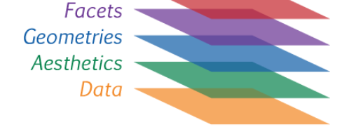
Ejemplo de visualización con iris
library(tidyverse)5.1 Ambas variables contínuas
ggplot(iris) +
aes(x = Sepal.Length, y = Petal.Length)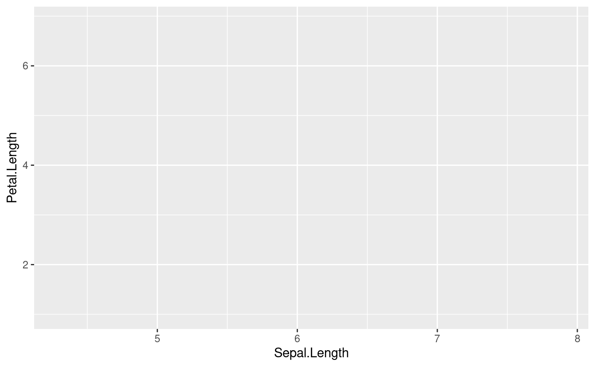
- geoms
Objetos geométricos. Son la representación visual de las observaciones. En general los que le dan el nombre al tipo de gráfico. La lista de “geoms” aumenta día a día.
ggplot(iris) +
aes(x = Sepal.Length, y = Petal.Length)+
geom_point()
ggplot(iris) +
aes(x = Sepal.Length, y = Petal.Length)+
geom_point(aes(color = Species))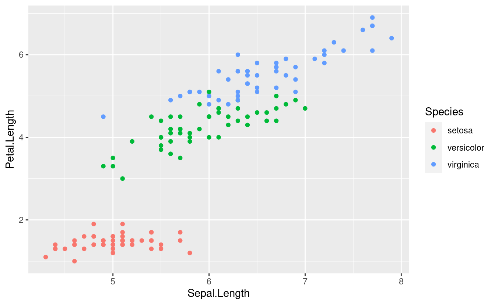
ggplot(iris) +
aes(x = Sepal.Length, y = Petal.Length)+
geom_point(aes(color = Species))+
geom_smooth()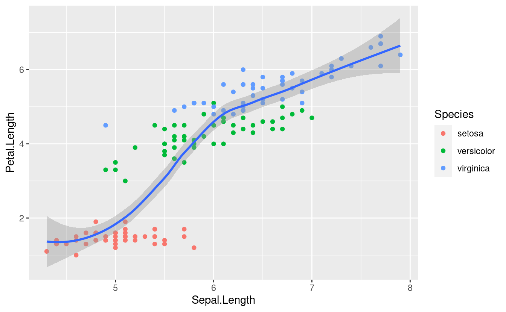
ggplot(iris) +
aes(x = Sepal.Length, y = Petal.Length, color = Species) +
geom_point()+
geom_smooth()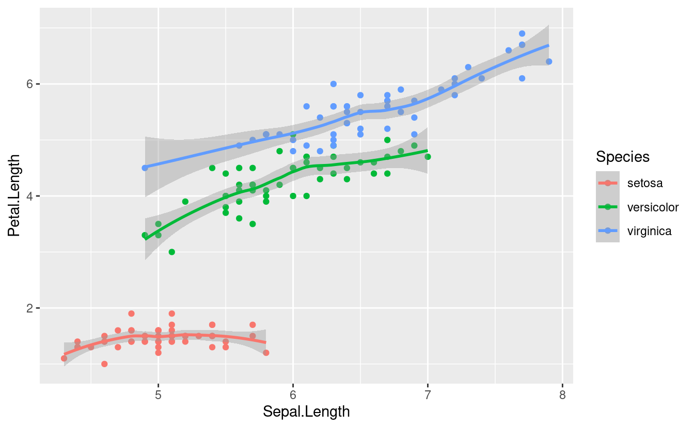
- facets
Las facetas o “facets” permiten dividir el mismo gráfico en múltiples paneles asociados a los niveles de un factor.
ggplot(iris) +
aes(x = Sepal.Length, y = Petal.Length)+
geom_point()+
geom_smooth(method = "lm")+
facet_wrap(~Species)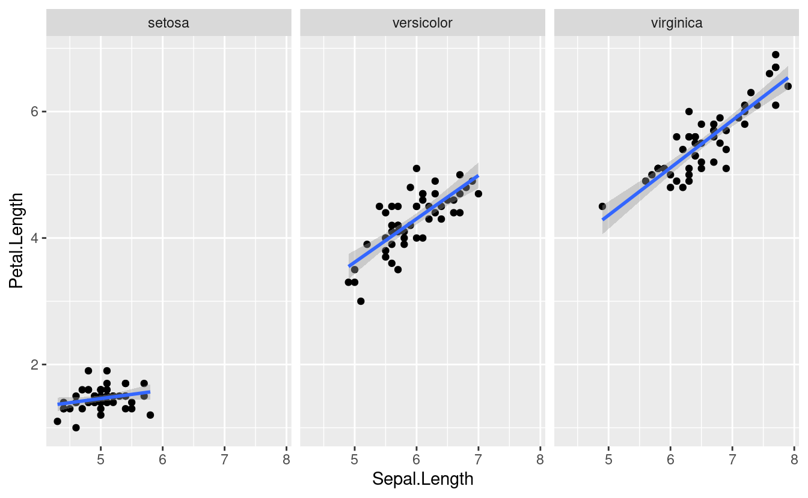
- theme
Los temas (theme) son un conjunto de opciones predefinidas sobre la apariencia de los objetos en ggplot. El tema por defecto del ggplot dibuja el gráfico sobre un fondo gris. Podemos cambiarlo a blanco y negro añadiendo el comando theme_bw().
ggplot(iris) +
aes(x = Sepal.Length, y = Petal.Length)+
geom_point()+
geom_smooth(method = "lm")+
facet_wrap(~Species) +
theme_bw()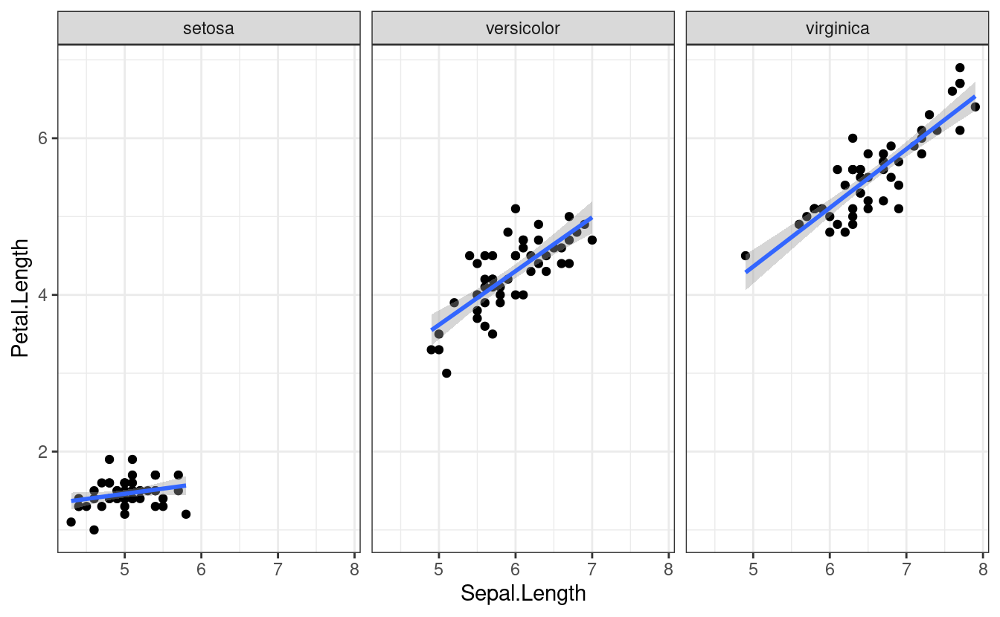
5.2 ggsave
ggsave(last_plot(), file="plots/iris_smooth.tiff",
w=80, h=60, units="mm", dpi=300)5.3 Comparación de niveles de factores
Los gráficos de barra, ampliamente usados en publicaciones científicas, son cada vez más criticados por “ocultar” la naturaleza de las observaciones (Drummond and Vowler 2011; Weissgerber 2015)

De (Drummond and Vowler 2011): Fig 1. Many different datasets can lead to the same bar graph.
The full data may suggest different conclusions from the summary statistics. The means and SEs for the four example datasets shown in Panels B–E are all within 0.5 units of the means and SEs shown in the bar graph (Panel A). p-values were calculated in R (version 3.0.3) using an unpaired t-test, an unpaired t-test with Welch’s correction for unequal variances, or a Wilcoxon rank sum test. - In Panel B, the distribution in both groups appears symmetric. Although the data suggest a small difference between groups, there is substantial overlap between groups. - In Panel C, the apparent difference between groups is driven by an outlier. - Panel D suggests a possible bimodal distribution. Additional data are needed to confirm that the distribution is bimodal and to determine whether this effect is explained by a covariate. - In Panel E, the smaller range of values in group two may simply be due to the fact that there are only four observations. Additional data for group two would be needed to determine whether the groups are actually different.
A continuación presentamos algunas opciones gráficas que surgen de la combinación de medidas de posición y de dispersión.
#Aprovechamos para customizar el `theme` a nuestro gusto y agregar algunos detalles:
p0 <-
ggplot(iris) +
aes(x = Species, y = Petal.Length)+
labs(x = "Iris species", y ="Sepal length (cm)") +
theme_light(base_size = 10)
p0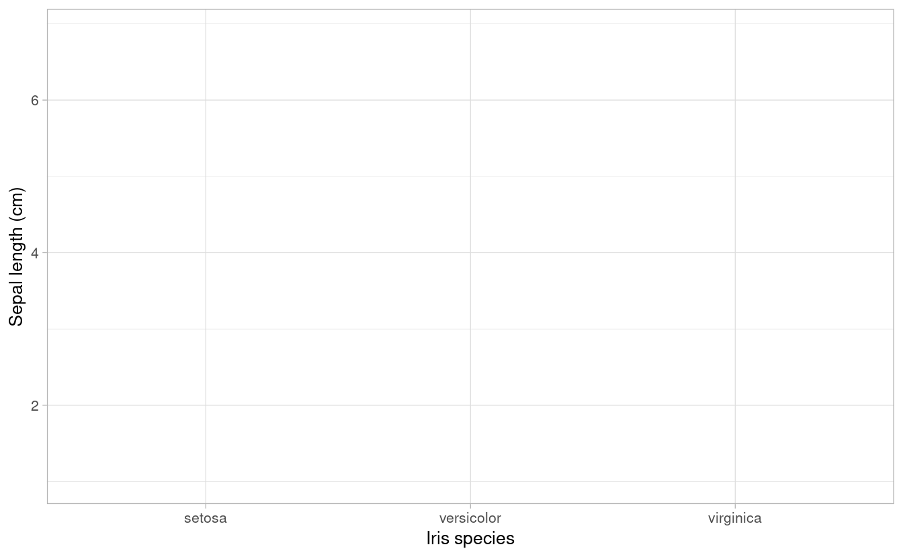
5.3.1 Observaciones + media / mediana
p1 <- p0 +
geom_point(shape = 1, alpha=0.2)+
stat_summary(fun= mean, #median
fun.min= mean,
fun.max = mean,
geom = "point",
size = 2)+
ggtitle("Observaciones (points) & media")
p1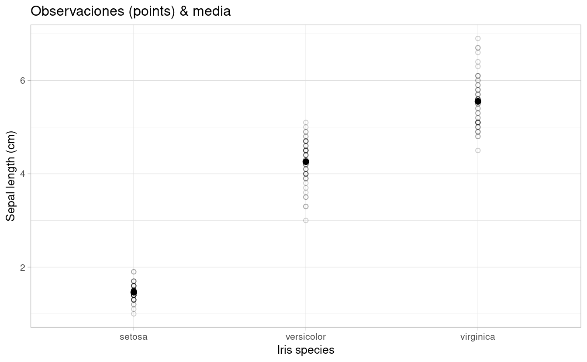
p2 <- p0 +
geom_jitter(width = 0.2, alpha=0.2)+
stat_summary(fun = mean, #median
fun.min= mean,
fun.max = mean,
geom = "crossbar",
size = 0.5)+
ggtitle("Observaciones (jitter) & media")
p2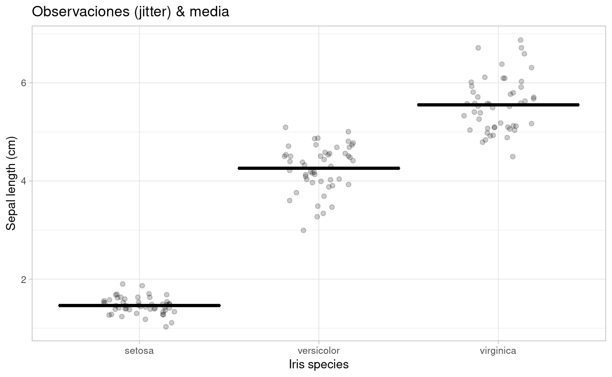
5.3.2 Barplot + SE
p3 <-p0 +
# geom_bar(stat="identity") +
stat_summary(fun=mean, position=position_dodge(width=0.95),geom="bar",
colour="black",fill="grey90")+
stat_summary(fun.data=mean_cl_normal, geom="errorbar", width=0.2) +
ggtitle("Barplot & SEM")
# geom_text(data= let, aes(label = M, x= trt, y=1, hjust=0.5),size = 4)
p3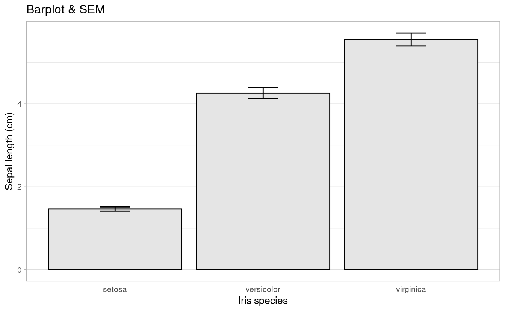
5.3.3 Box-plot
p4 <-p0 +
geom_boxplot(fill = "grey90") +
ggtitle("Boxplot & mean")
p4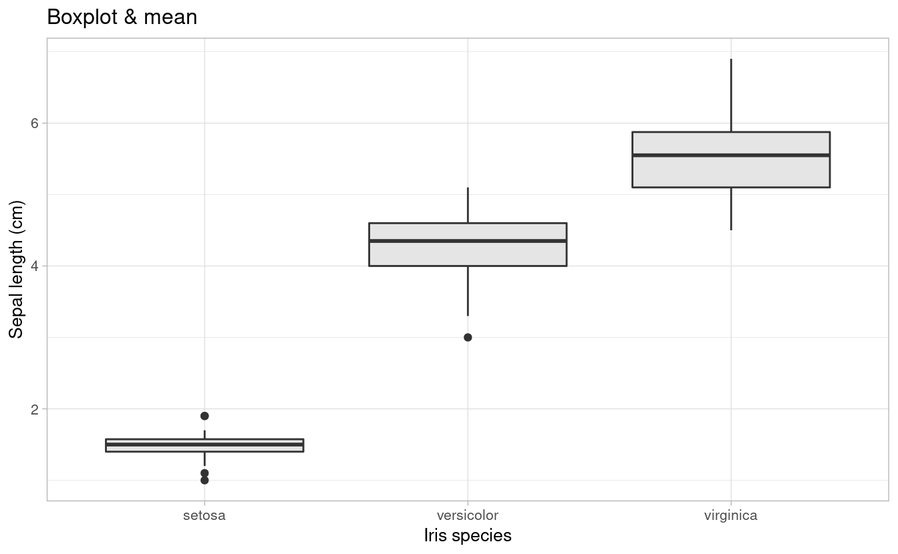
5.3.4 Violin plot
p5 <-p0 +
geom_violin(trim=FALSE,fill = "grey90")+
ggtitle("Violin plot")
p5 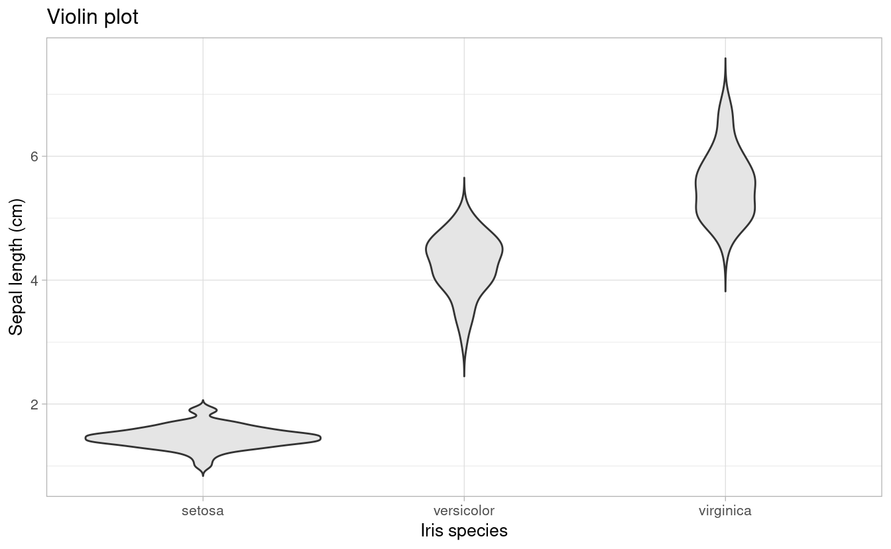
5.3.5 Media & dispersión
p6 <-p0 +
stat_summary(fun="mean", geom="point", size=2)+
stat_summary(fun.data = mean_se, geom = "errorbar", width=0.2)+
stat_summary(fun.data= mean_sdl, geom = "errorbar", color="red", width=0.2)+
stat_summary(fun.data = mean_cl_boot, geom = "errorbar", color="blue", width=0.2)+
ggtitle("Media + SE (negro) / SD (rojo) / 95% CI (negro)")
p6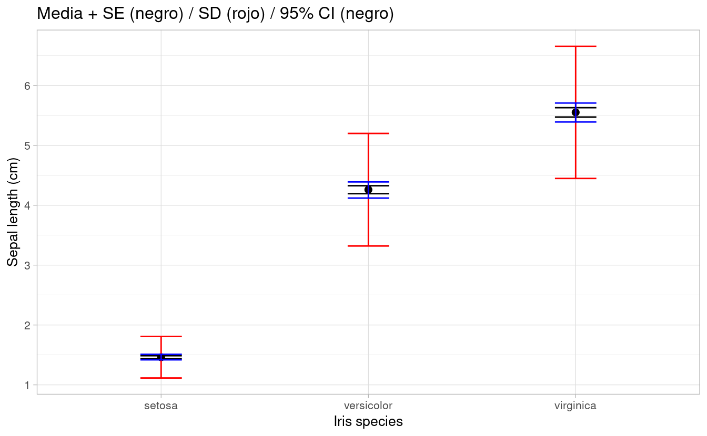
library(cowplot)
plot_grid(p1, p2, p3, p4, p5, p6, ncol = 3, nrow = 2)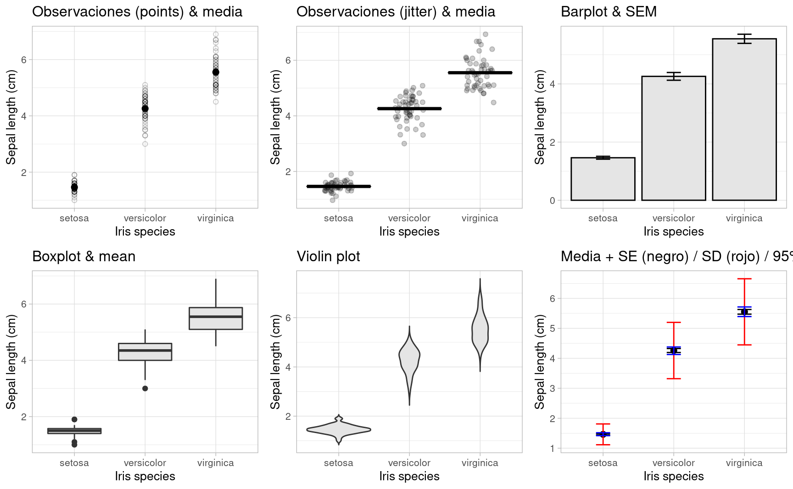
Si deseamos explorar las distribuciones de las variables podemos optar por un histograma o por diagramas de densidad.
cowplot::plot_grid(
iris %>%
ggplot(aes(Petal.Length, fill=Species)) +
geom_histogram()+
guides(fill=FALSE)
,
iris %>%
ggplot(aes(Petal.Length, fill=Species)) +
geom_density(alpha=0.7)
,
align="h"
)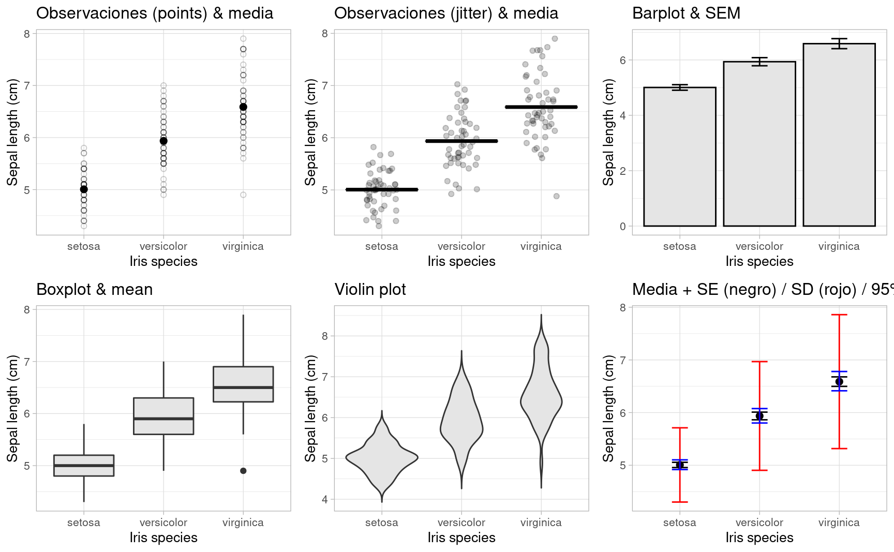
La gran comunidad de usuarios de R disponibiliza sus creaciones e incluso trabaja en extensiones que amplían la potencialidad de sus paquetes.
Se podría afirmar que no hay límites para la creación. Digamos, que no importa el “¿cómo?” si no el “¿qué?”
Algunas pruebas de ello son los siguientes links: